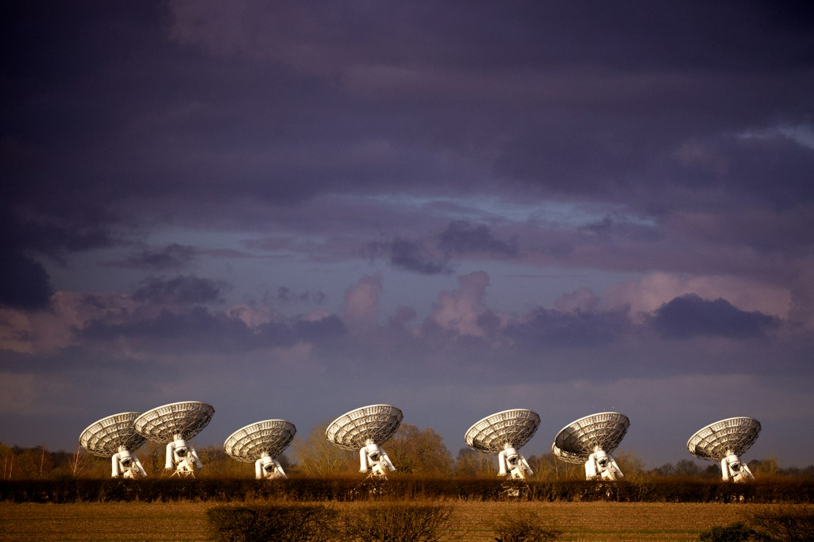
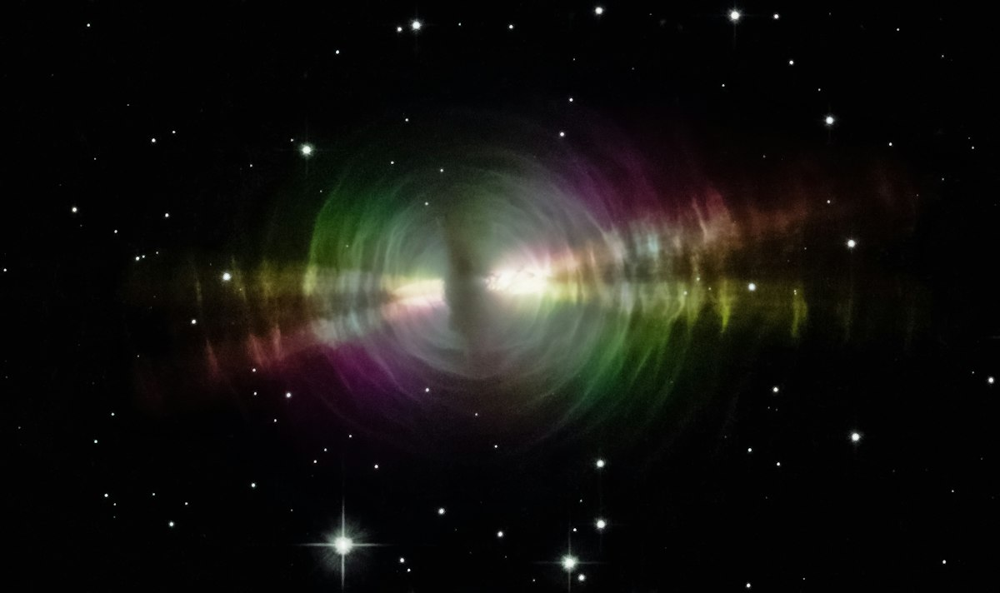
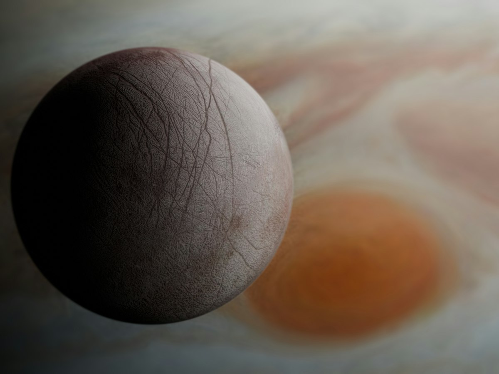

SCIENCE // DEEP SPACE
SCIENCE // DEEP SPACE
What the James Webb Telescope Just Revealed About Rocky Exoplanets in the TRAPPIST-1 System
New mid-infrared spectroscopy data narrows the search for secondary atmospheres on Earth-sized worlds 40 light-years away.
Real-world astrophysics, exoplanet habitability, quantum timekeeping, and orbital instrumentation—for readers who love hard science as much as hard sci-fi.
SCIENCE // DEEP SPACE
New mid-infrared spectroscopy data narrows the search for secondary atmospheres on Earth-sized worlds 40 light-years away.

One heavy object would test the equation of state that every neutron star obeys, if the mass can be measured properly.
New procurement documents outline multibillion-dollar investments for a permanent moon base and experimental nuclear propulsion systems.

James Webb Space Telescope observations suggest compact, high-redshift objects that may be primordial black holes.

Coronagraphic imaging isolates a massive world from its host star's glare.

A failed docking effort seals the fate of an aging gamma-ray sentinel in low Earth orbit.

One 25-minute flight at 100 meters over two Colorado sites turned an aerosol instrument into a height-resolved plastic sampler.

A convection model with one low-viscosity layer moves Earth's kneading to the core-mantle boundary, and that relocation is what makes young basalts survivable.

An Oxford group built the smallest loop a lattice gauge theory allows, with matter and field sharing two ions. Flux, not force, stopped the particle.

A consistency paper drops dark matter and dark energy, then survives nucleosynthesis, 175 rotation curves and cosmic chronometers. The microwave background is still a promise.

Atmospheric drag and failing gyroscopes leave mission planners with diminishing mechanical options.

A new experimental paradigm demonstrates that temporal progression is a derived consequence of quantum entanglement rather than an absolute backdrop.

On October 30, 1964, a steel-framed truss lifted off the desert floor to solve a mechanical problem that threatened the entire lunar program.

Unexpected particle flux near the Moon challenges existing deep-space shielding models.

NASA’s recent observations of distant dust halos raise questions about the frequency of planetary smash‑ups in young systems.

Shielded by 2,000 miles of lunar rock from Earth's radio chatter, robotic wire-mesh interferometers will listen to the universe's Cosmic Dark Ages.
New mid-infrared spectroscopy data narrows the search for secondary atmospheres on Earth-sized worlds 40 light-years away.

Losing less than one second every 30 billion years, optical lattice clocks allow spacecraft to navigate autonomously without waiting for Earth radio pings.

Containing twice the liquid water of all Earth's oceans combined, Europa's tidal-heated depths may be our solar system's most promising abode for life.